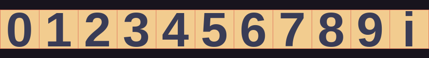
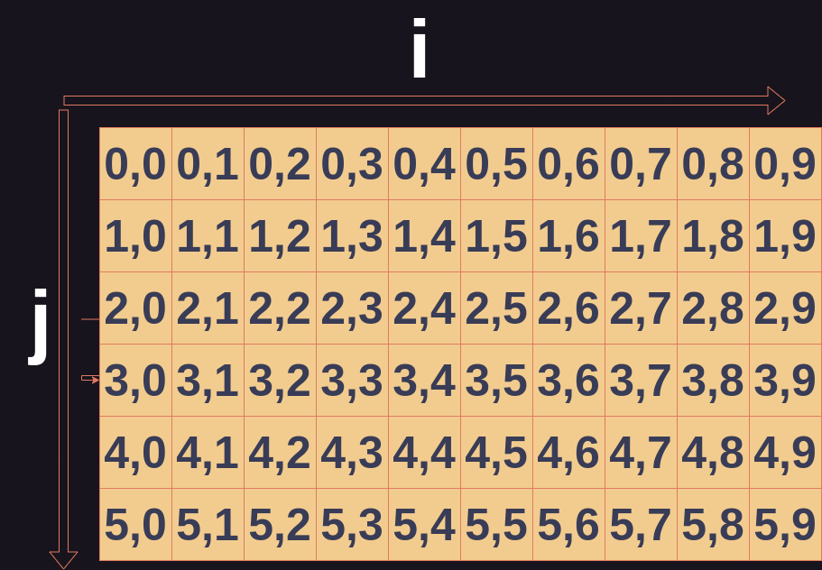
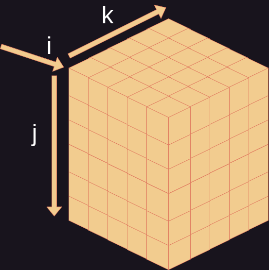

For Loops
Before we discuss for loops we must first understand more about about collection types. Collection types are data types that hold multiple objects such as strings, lists, tuples, and dictionaries. We will focus on strings and lists in this reading since these data types are not unique to Python. However, these data types are all iterable types.
Iteration
Collection types in Python, other than a set, are ordered. One object by the other. Each space within a collection is called an index. To iterate over a collection type is to enter the indices one after the other. Every iteration may simply check whats inside, maybe the contents of the indices are altered or used. You may already be able to tell, that a loop structure would be perfect for this. A loop can doing something with a index every iteration until there are no indices left. Keep in mind that Python, like many other languages employs zero based indexing. This means that the indexing number begins at 0 not 1.
 A diagram of the indices of an iterable collection type such as a list or string.
For Loops
The kind of loops used for iterating over collections are for loops. Many programming languages have for loops. A while loop is logically the same as a for loop, however the aspects that would need to be added to a while loop, such as a counter to keep track of the current index, are built into the design of the for loop. A for loop in Python may also be used to iterate over a range of numbers. The syntax of for loops in Python is particularly nice compared to other languages, and this is mostly due to the in operator.
in operator
The in operator checks whether a given value is within a collection. If the value is in the collection, the operator will return True if not it returns False. For example:
>>> name = "Steve"
>>> 's' in name
False
>>> 'a' in name
False
>>> 'e' in name
True
>>> 't' in name
True
Syntax
In Python, the for keyword can be combined with the in operator to create a loop. Here is the general syntax:
for variable in some_collection:
body
- The
forkeyword begins the loop. - This is followed by a variable name. The variable will reference the current element.
- Then the
inoperator followed by the name of a collection indicates what collection or range is going to be iterated over - This line is ended with a colon followed by the indented body that will execute every iteration.
Let's look at an example that iterates over a range. Iterating over a range is good when something needs to be done a specific number of times. So here a for loop is not necessarily being used to iterate over a collection.
for i in range(1,10):
print("This is the iteration number " + str(i))
Here a line is printed every iteration. Note that this only iterates 9 times, because the loop ends once 10 is reached, so the body does not execute on 10. Also note that the variable i represents the element of the current iteration. i is known as a counting variable and is often used as a placeholder variable in for loops and loops in general.
Now let's try a loop that iterates over an actual collection.
pets = ["dogs","cats","fish","horses","pigs","hedghogs","ferrets"]
for pet in pets:
if pet == "pigs":
print("I want a pet pig!")
else:
print("I don't like " + pet)
This loop checks every element in pets and if if is "pigs" a special sentence is printed. If not the current element is used to print another sentence. Note that this example utilizes nesting. The conditional if statement is nested within the for loop. Loops can also be nested within other loops.
Nested For Loops
To understand nested loops we first must understand the kinds of structures they are intended to iterate over.
Consider that the visualization of a list is a straight line. One index after the other. What if we had a list of lists? The visualization would resemble something like a checkerboard or grid.
 A visualization of a two dimensional list
Every element of the our original list is now within a row. And every element of the row has a column associated with it. This is known as a two dimensional list where our original list was a one dimensional list. Being a two dimension list mean that every iteration of a a element of the row involves iterating over every element within the column for that position in the row. And to do this we must use a nested for loop.
food = [["eggs","biscuit","grits","bacon","jam"],["pizza","sandwhich","salad"],["steak","asparagus","toast"]]
for meal in food:
for item in meal:
if item == "asparagus":
print("I love asparagus!")
This code iterates over the list of lists food by iterating over and assigning every list within to meal. Then meal is iterated over assigning every element in meal to item before meal is reassigned to the nest list. This accomplishes checking every element within every list for "asparagus".
This concept can be extended to any number of dimensions. In other words, any number of lists within lists. And for every dimension another nested loop will be added.

Visualization of a three dimensional list.
For example, a three dimensional list would be a list within lists within lists. And so forth. However, anything beyond 3 dimension is seldom used, and even three is usually reserved for programming involving more advanced physics and math. Furthermore, Python is generally not suited for nested looping has it is too computationally intensive for interpreted languages.